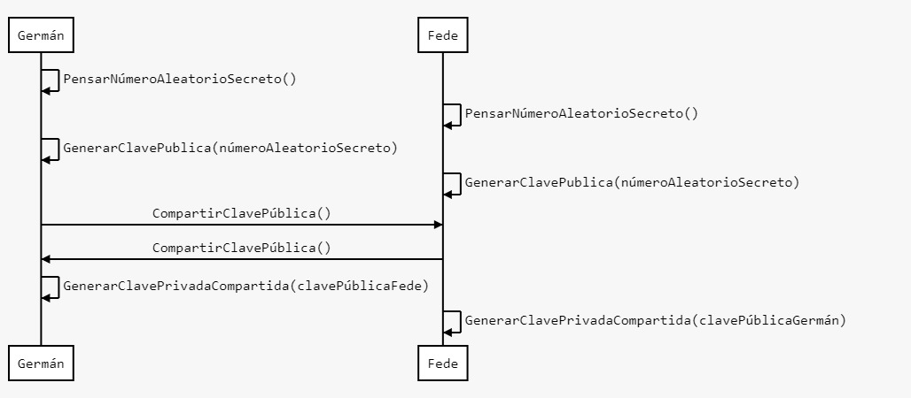

Diffie-Hellman es un algoritmo que permite ponerse de acuerdo para definir una clave en común entre 2 involucrados en un medio inseguro. Por ejemplo, si estás en una reunión con varias personas pero solo con una de ellas quisieras compartir una clave incluso mientras los demás los están viendo, con este algoritmo lo puedes hacer.
Este algoritmo se utiliza todo el tiempo cuando navegas por la web ya que se utiliza en el protocolo TLS (HTTPS).
Para que este algoritmo funcione se deben definir previamente 2 constantes: G y P. En este caso son: 9 y 23, respectivamente. Estas constantes también pueden ser acordadas entre los involucrados, pues son públicas.
Luego se requiere que cada involucrado genere un número aleatorio (en esta demo se restringió a 99 como valor máximo aunque esto es solo a modo de ejemplificación). Le llamemos a este número A.
Para generar la clave pública X que se compartirá con el otro involucrado se debe calcular la siguiente fórmula:
Una vez que cada involucrado conoce la clave pública del otro, se procede a generar la clave privada K (que será la misma para los 2):
Finalmente que ya tenemos definida la clave privada compartida K, se la puede utilizar para cifrar mensajes. En este caso, se utiliza el cifrado César.
Resumen: Germán y Fede se envían mensajes en un canal abierto.
Resultado: Se obtiene una clave K secreta conocida solo por Germán y Fede.

La versión básica de Diffie-Hellman solo preserva el secreto de la clave ante espías pasivos, es decir, aquellos que solo ven pero no modifican. En caso de adversarios activos, es decir, aquellos capaces de interceptar y modificar los mensajes no hay garantía del secreto.